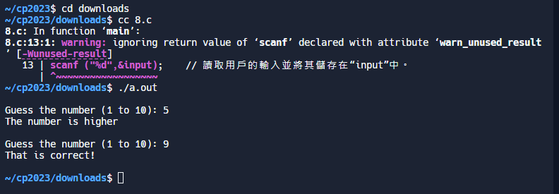

7.輸入年份產生日曆 <<
Previous Next >> 9.判斷三角形
8.猜數字
#include<stdio.h> // 包括標準輸入/輸出頭檔。
#include<stdlib.h> // 包含標準庫頭檔。
#include<time.h> // 包含用於產生隨機數的時間頭檔。
int main () // 主函數開始。
{
int number, input; // 宣告兩個整數變數「number」和「input」。
srand ( time(NULL) ); // 使用當前時間初始化隨機種子。
number = rand() % 10 + 1; // 產生 1 到 10 之間的隨機數並將其儲存在「number」中。
do { // do-while 循環的開始。
printf ("\nGuess the number (1 to 10): "); // 列印一則訊息，提示使用者猜測數字。
scanf ("%d",&input); // 讀取用戶的輸入並將其儲存在“input”中。
if (number > input) // 如果隨機數大於使用者輸入。
printf ("The number is higher\n"); // 列印一條訊息，表示該數字更大。
} while (number!=input); // 只要使用者的輸入不等於隨機數就繼續循環。
printf ("That is correct!\n\n"); // 列印一條訊息，表示用戶猜對了。
return 0; // 返回0表示程式執行成功。
} // 主函數結束。

7.輸入年份產生日曆 <<
Previous Next >> 9.判斷三角形